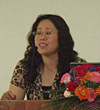

郑玉敏：女，51岁，教授，博士，法律系主任，硕士研究生导师；主讲课程：合同法学，经济法学。负责全院公共选修课合同法学的教学工作；
|
1-1
基本
信息
|
姓 名
|
郑玉敏
|
性别
|
女
|
出生年月
|
1965.03.15
|
||||
|
最终学历
|
博士研究生
|
职 称
|
教授
|
电 话
|
13649827128
|
|||||
|
学 位
|
博士
|
职 务
|
教研室主任
|
传 真
|
0769—22861152
|
|||||
|
所在院系
|
政法学院
|
|
Zym65315@163.com
|
|||||||
|
通信地址（邮编）
|
东莞市松山湖区大学路1号（523808）
|
|||||||||
|
研究方向
|
民商法学、法学理论
|
|||||||||
|
1-2
教学
情况
|
近五年来讲授的主要课程（含课程名称、课程类别、周学时；届数及学生总人数）（不超过五门）；承担的实践性教学（含实验、实习、课程设计、毕业设计/论文，学生总人数）；主持的教学研究课题（含课题名称、来源、年限）（不超过五项）；作为第一署名人在国内外公开发行的刊物上发表的教学研究论文（含题目、刊物名称、时间）（不超过十项）；获得的教学表彰/奖励（不超过五项）
一、近五年来讲授的主要课程：
1、合同法学：全院公选课，2时/周，2届，总人数约300人；
2、经济法学：必修专业基础课，3时/周，5届，总人数约1178人； （包括会计专业、工商管理专业、人力资源专业、行政管理专业的经济法学课程）
3、法理学：必修专业基础课，3时/周，4届，总人数约500人。
二、近五年承担的实践性教学：
1、负责总设计民法学（含民法总论、民法分论）、合同法学、物权法、债权法等民法课程的教学体系；
2、指导建设模拟法庭；
3、共指导本科毕业论文58篇，硕士学位论文2篇；
4、指导学生毕业实习220人次；
5、指导模拟法庭3次，学生辩论赛3次；
三、主持的教学研究课题：
1、应用性法律人才培养与法学专业实践教学体系改革的研究与实践，广东省教育厅，主持人，2006.12-2008.12（已申请结题）；
2、普通高等教育“十一五”国家级教材规划立项—民法，高等教育出版社，主编，2006.12-2008.12（已出版）；
3、法学专业实践教学体系及教学手段改革的研究与实践，东莞理工学院（重点课题），主持人，2005.5-2007.5（已结题）；
4、统一司法考试与法学教育改革——以东莞理工学院法学本科教学改革为例，东莞理工学院，主持人，2008.12-2010.12；
5、经济法重点课程，东莞理工学院，主持人，2009.3-2011.3。
四、在国内外公开发行的刊物上发表的教学研究论文和主编的教材：
1、新编民法理论与实务（主编），“十一五”国家级规划教材，高等教育出版社，2009年3月；
2、民法理论与实务（主编），高等教育出版社，2004年12月；
3、新编经济法实用教程（主编），大连理工大学出版社，2004年8月；
4、经济法实务（主编），东莞理工学院自编教材，2006年2月；
5、经济法实训指导（主编），东莞理工学院自编教材，2007年2月
6、《应用型法律人才培养与法学专业实践教学体系的构建——以东莞理工学院为例》《东莞理工学院学报》，2010年第2期；
7、《法学专业教学方法改革探讨》，《东莞理工学院学报》，2006年第2期；
五、获得的教学表彰/奖励：
1、获2010年东莞市优秀教师称号；
2、获东莞理工学院2008年优秀教学成果二等奖（第一名，负责人）；
3、获东莞理工学院2008年优秀教学质量奖
|
|||||||||
|
1-3
学术
研究
|
近五年来承担的学术研究课题（含课题名称、来源、年限、本人所起作用）超过五项）；在国内外公开发行刊物上发表的学术论文（含题目、刊物名称、署名次序与时间）（不超过五项）；获得的学术研究表彰/奖励（含奖项名称、授予单位、署名次序、时间）（不超过五项）
一、近五年来承担的学术研究课题：
1、中国女性平等工作权研究，中国法学会2009年部级研究课题 ，2009-2010年度，主持人；
2、东莞发展的法律研究，东莞理工学院重大创新人才课题，2007年10月-2008年5月，主持人；（已结题）
3、新莞人女性婚姻家庭研究，东莞妇联，2009-2010年度，主持人；（已结题）
4、广东省地方性法规清理，广东省人大，参加人，2009年4月-2009年8月；（已结题）
5、公共利益的法律规制研究，东莞理工学院教授启动课题，2006年10月-2008年5月，主持人。（已结题）
二、在国内外公开发行刊物上发表的学术论文：
（一）发表的学术论文
1、论文（独著）：《家庭责任分担立法与女性平等工作权实现》，《法学杂志》，2010年第5期。(CSSCI)
2、论文（独著）：《中国女性平等工作权立法研究》，《社会科学辑刊》，2010年第3期。(CSSCI)
3、论文（独著）：《德沃金的少数人权利法理及其中国进路》，《社会科学辑刊》，2008年第5期。(CSSCI)
4、论文（独著）：《资源平等和伦理学个人主义两个原则—德沃金的社会弱势群体保护理论研究》，《辽宁大学学报》，2008年第6期。（中文核心）
5、民主的合宪性——德沃金宪政思想研究（独著），惟一作者，2007年第10期，河北法学(CSSCI)；
(二)出版的专著
1、专著（独著）《作为平等的人受到对待的权利—德沃金的少数人权利法理》，法律出版社，2010年4月。
2、专著（合著）：《托起的天平—东莞发展的法律思考》，广东高等教育出版社，2008年5月。
|
|||||||||